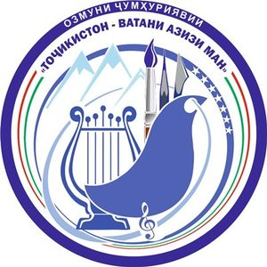

← Бозгашт
«Тоҷикистон - Ватани азизи ман» · 2025

НИЗОМНОМАИ
Озмуни ҷумҳуриявии «Тоҷикистон - Ватани азизи ман»
🎵 Соли 2025 · Ҷумҳурии Тоҷикистон
1 МУҚАРРАРОТИ УМУМӢ1. Озмуни ҷумҳуриявии «Тоҷикистон - Ватани азизи ман» (минбаъд — Озмун) бо мақсади дарёфти истеъдодҳои нав дар соҳаҳои санъати мусиқӣ, сарояндагӣ, тасвирӣ ва дизайн, баланд бардоштани маҳорати касбӣ ва зебоишиносӣ, тақвият бахшидан ба ҳунари баланди иҷрокунандагӣ, таблиғ ва эҳёи ҳунарҳои мардумӣ, муаррифии фарҳанги волои миллати тоҷик, эҳтиром ва арҷгузорӣ ба суннатҳои неки аҷдодӣ, сатҳи касбии асарҳои нави мусиқӣ, офарандагӣ, интихоби намунаҳои беҳтарини оҳангу суруд ва асарҳои рассомӣ гузаронида мешавад.
2. Мазмун ва ғояи асосии суруду оҳанг, асарҳои мусиқӣ, санъати тасвирӣ ва дизайн, ки ба Озмун пешниҳод мешаванд, тараннуми шахсиятҳои барҷастаи халқи тоҷик , дастовардҳои замони Истиқлоли давлатӣ , арҷ гузоштан ба анъанаҳои милливу мероси пурғановати ниёгон , табиати зебоманзари Тоҷикистон ва эҳё намудани ҳунарҳои мардумиро дар бар мегирад.
↑ Ба мундариҷа
2 САРПАРАСТ ВА МАСЪУЛОНИ ОЗМУН3. Сарпарасти Озмун — Президенти Ҷумҳурии Тоҷикистон .
4. Масъулони баргузории Озмун: Вазорати фарҳанг, Вазорати маориф ва илм, Кумитаи телевизион ва радио, иттифоқҳои композиторон, рассомон ва дизайнерони Тоҷикистон.
5. Кумитаҳои кор бо ҷавонон ва варзиш, занон ва оила ҷиҳати ҷалби наврасон, ҷавонон ва занони боистеъдод ба Озмун мусоидат менамоянд.
6. Дар ВМКБ, вилоятҳои Суғду Хатлон, шаҳри Душанбе ва шаҳру ноҳияҳо раёсат, шуъба ва бахшҳои рушди иҷтимоӣ ва робита бо ҷомеа, фарҳанг, маориф, ҷавонон ва варзиш, занон ва оилаи мақомоти иҷроияи маҳаллӣ масъули ташкил ва баргузории Озмун мебошанд.
↑ Ба мундариҷа
3 КОМИССИЯИ ОЗМУН7. Барои гузаронидани Озмуни ҷумҳуриявии «Тоҷикистон - Ватани азизи ман» комиссияи ҷумҳуриявӣ таъсис дода мешавад, ки ҳайати он бо амри Президенти Ҷумҳурии Тоҷикистон муқаррар мегардад.
8. Ваколати комиссияи Озмун:
таҳияи ҷадвали баргузории Озмун ва назорати он;
тасдиқи тартиб, талабот ва тавзеҳот оид ба Озмун;
пешниҳоди ҳайати ҳакамон барои даврҳои дуюм ва сеюм;
якҷо бо ҳайати ҳакамон гузаронидани семинари машваратӣ;
муайян намудани ҷойи баргузории даврҳои дуюм ва сеюм;
назорати риояи талабот ва пешниҳоди тавсияҳо ба довталабон;
омӯзиш ва тавсияи ҳуҷҷатҳои иштирокчиёни Озмун ба даври сеюм;
баррасии пешниҳодҳои ҳайати ҳакамон ва арзу шикоятҳо;
тасдиқи протокол ва эълони натиҷаи хулосаи ҳайати ҳакамони даври сеюм;
ҷамъбасти натиҷа ва пешниҳоди он ба Президенти Ҷумҳурии Тоҷикистон.
9. Комиссияи Озмун дар ҳолати ҷавобгӯ набудани хулосаи ҳайати ҳакамон ба талаботи Низомнома, инчунин ҳолатҳои истисноӣ ё иштибоҳҳои техникӣ — ҳуқуқи бекор кардани онро дорад .
↑ Ба мундариҷа
4 ТАРТИБИ БАРГУЗОРИИ ОЗМУН10. Озмун дар се давр гузаронида мешавад:
Даври якум — аз 1-уми апрел то 10-уми майи соли 2025 дар маркази шаҳру ноҳияҳо;Даври дуюм — аз 10-уми июн то 30-юми июни соли 2025 дар ВМКБ, вилоятҳои Суғду Хатлон, шаҳри Душанбе ва шаҳру ноҳияҳои тобеи ҷумҳурӣ;Даври сеюм — нимаи дуюми моҳи сентябри соли 2025 дар шаҳри Душанбе бо супоридани ҷоизаву дипломҳо ҷамъбаст мешавад.
11. Корҳои ташкилӣ барои баргузор кардани даврҳои якум ва дуюм ба зиммаи мақомоти иҷроияи ҳокимияти давлатии ВМКБ, вилоятҳои Суғду Хатлон, шаҳри Душанбе ва шаҳру ноҳияҳо вогузор мегардад.
12. Протоколи даври дуюм бо имзои раиси ВМКБ, вилоятҳои Суғду Хатлон, шаҳри Душанбе, шаҳру ноҳияҳо ва раиси ҳакамон ба комиссияи Озмун пешниҳод мешавад.
13. Ҳуҷҷатҳои ғолибони даври дуюм аз ҷониби ҳайати ҳакамон бо протоколҳои расмӣ тасдиқ шуда, барои иштирок дар даври сеюм ба комиссияи Озмун пешниҳод карда мешаванд.
14. Муҳлати пешниҳоди ҳуҷҷатҳои ғолибони даври дуюм ба даври сеюм — то 1 август .
15. Рафти даврҳои Озмун тавассути воситаҳои ахбори омма ва шабакаҳои телевизиону радио ба таври васеъ инъикос мешавад.
↑ Ба мундариҷа
5 ШАРТҲОИ ИШТИРОК ДАР ОЗМУН16. Ба Озмун, қабл аз ҳама, асарҳои тозаэҷоди оҳангсозон-бастакорон, рассомон ва дизайнерон, инчунин асарҳо аз осори беҳтарини мусиқии классикӣ ва беҳтарин мусаввараҳои классикии санъати тасвирӣ ва ҳунарҳои мардумии ватаниву ҷаҳонӣ дар жанрҳои мусиқии анъанавӣ, академӣ ва эстрадӣ пешниҳод мешаванд.
17. Озмун дар байни гурӯҳҳои зерин доир мегардад:
хонандагон, донишҷӯён ва магистрантони муассисаҳои таълимии мусиқии касбӣ, мактабҳои санъат ва рассомии бачагона, коллеҷҳои санъат ва рассомӣ, муассисаҳои олии касбӣ, сарояндагону навозандагони филармонияҳои халқӣ, театрҳои халқӣ, дастаҳои ҳунарии назди раёсат, ансамблҳои ҳунарӣ ва оилавӣ;
хонандагон, донишҷӯёни таҳсилоти миёнаи умумӣ, ибтидоӣ, миёна ва олии касбӣ ва баъд аз муассисаҳои таҳсилоти олии касбии ғайриихтисос , новобаста аз шакли ташкилию ҳуқуқӣ, намояндагони касбу кори гуногуни ғайрисоҳавӣ;
шаҳрвандони хориҷӣ , ки дар Ҷумҳурии Тоҷикистон таҳсил ё кору фаъолият доранд.
18. Барои ҳар як гурӯҳ меъёрҳои Озмунро комиссияи Озмун муқаррар менамояд.
19. Довталабоне, ки дар даври якум тибқи раддабандии синнусолӣ ба қайд гирифта шудаанд, то даври сеюм ба ҳамин тартиб иштирок менамоянд.
⚠️ Банди 20: Дар Озмун шахсони шинохтаи санъати мусиқӣ, санъати тасвирӣ ва дизайн, оҳангсозону бастакорон, сарояндагону навозандагон, рассомону дизайнерони унвондору касбӣ , омӯзгорони фанҳои тахассусии муассисаҳои таҳсилоти миёна ва олии касбии соҳаи фарҳанг иштирок карда наметавонанд .
21. Як шахс дар ду номинатсия ширкат варзида наметавонад .
22. Ғолибони Озмун бо Шоҳҷоиза, ҷоизаҳои якум, дуюм ва сеюм , диплом ва мукофотпулиҳо сарфароз гардонида мешаванд.
23. Ғолибони Озмун (лауреатҳои Шоҳҷоиза, ҷоизаҳои якум, дуюм ва сеюм) ҳуқуқи иштирок дар солҳои минбаъдаи Озмунро надоранд .
24. Раддабандии синнусолӣ ба таври зайл сурат мегирад:
Номинатсияи оҳангсозӣ-бастакорӣ: аз 18 то 35-сола;Номинатсияҳои сарояндагӣ, навозандагӣ, санъати тасвирӣ ва дизайн:
аз 12 то 17-сола;
аз 18 то 35-сола.
⚠️ Банди 25: Дар Озмун истифодаи фонограмма манъ аст .
26. Теъдоди иштирокчиёни даври якум беҳудуд буда, ғолибони даври якум ба даври дуюм ва ғолибони даври дуюм ба даври сеюм роҳ меёбанд.
27. Миёни роҳбари муассисаи таълимӣ, омӯзгор ва довталаб (дар шахси падару модар ё сарпарасти ӯ) шартнома ҷиҳати омода намудани довталаб ба имзо расонида мешавад.
28. Масъулини мақомоти иҷроияи маҳаллӣ барои иҷро накардани муқаррароти Низомнома оид ба вайрон намудани талаботи синнусолӣ, таҳрифи маълумоти иштирокчиён масъулият доранд .
29. Ғолибони Озмун уҳдадоранд , ки минбаъд тибқи шартнома тӯли 5 сол дар муассисаҳои консертӣ, эҷодӣ ё таълимии соҳаи фарҳангу санъат кору фаъолият намоянд.
30. Иштирокчиёни номинатсияҳои санъати тасвирӣ ва дизайн дар ҳама даврҳои Озмун асарҳои худро пешниҳод менамоянд.
↑ Ба мундариҷа
6 НОМИНАТСИЯҲО ВА ТАЛАБОТ31. Озмун аз рӯйи панҷ номинатсия гузаронида мешавад:
🎼 оҳангсозӣ-бастакорӣ;
🎤 сарояндагӣ;
🎻 навозандагӣ;
🎨 санъати тасвирӣ;
✏️ дизайн.
32. Дар панҷ номинатсия асарҳое пешниҳод мегарданд, ки дар мавзуи зебоии табиати Тоҷикистон, ишқу ҷавонӣ , васфи Ватану ватандӯстӣ , ғояҳои Истиқлолу озодӣ, сулҳу субот, ваҳдату якпорчагии Тоҷикистон, тараннуми симоҳои барҷастаи миллат, ҷашнҳои Наврӯзи байналмилалӣ, Меҳргон, Сада, об ҳамчун манбаи ҳаёт , эҳёи ҳунарҳои мардумӣ таълиф шудаанд.
33. Ба Озмун дар номинатсияи санъати тасвирӣ асарҳое қабул карда мешаванд, ки дар рӯйи матоъ (холст) ё коғаз офарида шудаанд. Масолеҳҳои иҷозатшуда: чӯб, металл, хокаи махсус, гил, гуаш, акрил, рангҳои равғанӣ, акварел, пастел, қаламҳои ранга ва сиёҳ.
⚠️ Банди 34: Нусхабардории асарҳои рассоми дигар қатъиян манъ аст . Асари офаридашуда бояд бе ёрии падару модар ва устод тартиб дода шавад. Дар пушти асар бояд номинатсия, номи асар, ному насаб, синну сол, муассиса, суроға ва номи роҳбар (омӯзгор) сабт бошад.
35. Ҳаҷми корҳои пешниҳодшаванда — 50×60, 50×70, 60×80, 70×90 ё 80×100 см .
36. Ҳар як иштирокчӣ ба ҳар давр як асар (ҳамагӣ 3 асар ) пешниҳод менамояд.
37. Аз иштирокчиёни номинатсияҳои санъати тасвирӣ ва дизайн ба таври ҳатмӣ имтиҳони маҳорати касбӣ (то як соат) дар назди ҳайати ҳакамон гирифта мешавад.
38. Асарҳое, ки соҳиби Шоҳҷоиза, ҷойҳои якум, дуюм ва сеюм гардидаанд, ба соҳибонашон баргардонида намешаванд .
39. Асарҳои ғолибони даври сеюм ба Муассисаи давлатии «Осорхонаи миллӣ» -и Дастгоҳи иҷроияи Президенти Ҷумҳурии Тоҷикистон супорида мешаванд.
40. Дар Озмун ба асарҳои тозаэҷод , симои зоҳирӣ ва сарулибоси саҳнавии иштирокчиён афзалият дода шуда, ба такрори суруду оҳангҳо ва асарҳои рассомӣ/дизайнерӣ роҳ дода намешавад.
📋 Талаботи махсуси ҳар номинатсия (банди 41):
🎼 1. Оҳангсозӣ-бастакорӣ
18-35
иштирокчиён бояд дорои таҳсилоти миёнаи махсус ва олии мусиқӣ , ё намояндагони мактаби суннатии устод-шогирд (бо нишондоди мушаххас);
асарҳо дар жанрҳои камеравӣ, сюита, сонатино, вариатсия, пиеса, романс, суруд, кантата , инчунин мусиқии анъанавӣ ва эстрадӣ;
ба ҳар давр 1 асар (ҳамагӣ 3 асар), бо санҷиши тахассусӣ ;
асарҳо дар шакли клавир, партитура ё сабти нотавӣ ;
дар даври дуюм ва сеюм — иҷрои зинда ;
ба техникаи оҳангсозӣ, мутобиқати мавзуъ ба жанр, ҳамоҳангии шеър ба мусиқӣ — аҳаммияти ҷиддӣ;
ҳаваскорон метавонанд бо ариза муроҷиат намуда, баъди санҷиши тахассусӣ иштирок намоянд.
маҳорати касбӣ, талаффузи бурро , нафаси равон, диапазони васеи овоз, саҳназебӣ, либоси саҳнавӣ, одоб ва ҳаракати саҳнавӣ ба эътибор гирифта мешавад;
ба ҳар даври Озмун як асар дар жанрҳои гуногун (ҳамагӣ 3);
барномаро аз асарҳо дар жанрҳои суруд, романс, ария, ариозо , мусиқии камеравии вокалӣ, инчунин шашмақом, фалак, мақомҳои маҳаллӣ ва мусиқии эстрадӣ (поп, диско, ҷаз ва ғ.) мураттаб созад;
дар номинатсияи жанри эстрадӣ — созҳои аврупоиасос ва миллӣ ҳардуи;
пешниҳоди силсилавӣ иҷозат дода мешавад;
тарҷумаи таҳтуллафзии сурудҳои бо забонҳои дигар ҳатман пешниҳод шавад;
ба шеърҳои муосир (хусусан аз баёзҳои тозанашр) афзалият дода мешавад.
🎻 3. Навозандагӣ
12-17 18-35
маҳорати касбӣ, хушсадоӣ, техникаи садобарорӣ, дилнишинии сабк, одоби саҳнавӣ ба эътибор;
ба ҳар давр 1 асар (ҳамагӣ 3) аз жанрҳои гуногун;
барномаро аз жанрҳои полифонӣ, соната, вариатсия, консерт, пйесаи консертӣ , инчунин мусиқии анъанавӣ (шашмақом, фалак, мақомҳои маҳаллӣ) ва эстрадӣ мураттаб созад;
дар жанри академӣ — 1 асари мураккаб (лирикӣ ё техникӣ) + 1 калонҳаҷм (соната, вариатсия, консерт). Асарҳо аз ёд навохта мешаванд. 1 асар ҳатман бояд аз композиторони тоҷик бошад;
иҷро бо фортепиано, ансамбли камеравӣ, оркестрҳои симфонӣ ва созҳои миллӣ ё консермейстер.
🎵 Созҳои аврупоиасос ва миллӣ
Созҳои аврупоиасос:
фортепиано;
созҳои торӣ-камонӣ : скрипка, виолончел, контрабас;
созҳои нафасӣ : флейта, фагот, гобой, труба, туба, тромбон, валторна, саксофон, кларнет ва ғайра;
созҳои зарбӣ : ксилофон, металлофон, литавра, нағораҳои хурду калон ва ғайра.
Созҳои миллӣ:
созҳои мизробӣ : рубоб, тор, тарбӯр, дутор, думбра, дутор бас, соз, сетор, уд, рубоби бадахшонӣ, қонун ва ғайра;
созҳои торӣ-камонӣ : ғижак, қобуз, сато;
созҳои нафасӣ : най, қушнай, сурнай, карнай, тутак ва ғайра;
созҳои торӣ-зарбӣ : чанг, лабчанг ва ғайра.
🎨 4. Санъати тасвирӣ
12-17 18-35
маҳорати эҷодӣ, интихоби асар, мазмуни асар, масолеҳи истифодашуда;
ба ҳар давр 1 асар (ҳамагӣ 3), бахшида ба мавзуъҳои гуногун;
равияҳо: мусаввирӣ, мусаввирии монументалӣ, ҳайкалтарошӣ, графикаи дастгоҳӣ, миниатюра ва санъати ороиши амалӣ (наққошӣ, кулолгарӣ, маҳсулоти бадеӣ аз металл, коркарди бадеии чӯб, масолеҳи сангӣ, гаҷкорӣ).
маҳорати эҷодӣ, диди нав, навоварӣ , эҷоди асарҳои мубрам;
ба ҳар давр 1 асар (ҳамагӣ 3), бахшида ба мавзуъҳои гуногун;
равияҳо: дизайни графикӣ, реклама, ороиши дохили бино, меъмории манзаравӣ, мӯди либос ва бофандагии бадеӣ (батика, гобелен).
42. Вақти баромади довталаб дар даври дуюм — то 10 дақиқа , дар даври сеюм — то 20 дақиқа .
↑ Ба мундариҷа
7 ҲАЙАТИ ҲАКАМОН43. Ҳайати ҳакамони даври якум аз тарафи мақомоти иҷроияи ҳокимияти давлатии маҳаллӣ аз ҳисоби мутахассисони мусиқишинос, санъатшинос, рассомон, омӯзгорон дар мувофиқа бо Вазорати фарҳанг интихоб гардида, ҳайати ҳакамони даврҳои дуюму сеюм бо пешниҳоди Вазорати фарҳанг, иттифоқҳои композиторон, рассомон ва дизайнерон аз ҷониби комиссияи Озмун тасдиқ карда мешавад.
Шахсе, ки шогирд ё узви оилаи ӯ дар Озмун иштирок мекунад, ҳуқуқи ба ҳайати ҳакамон шомил гардиданро надорад.
44. Ҳайати ҳакамон аз рӯйи меъёри то 10 хол ғолибонро муайян мекунад.
45. Ҳайати ҳакамон барои ҷобаҷогузории дурусти асарҳои мусиқӣ, рақс, санъати тасвирӣ ва дизайн дар жанрҳои мувофиқ вобаста ба номинатсияҳои Озмун уҳдадор мебошанд.
↑ Ба мундариҷа
8 ТАЪМИНОТИ МОЛИЯВИИ ОЗМУН46. Хароҷоти даврҳои якум, дуюм ва сеюми Озмун, сафарбаркунии ғолибон ва омӯзгорони онҳо, буду бош — аз ҳисоби буҷети мақомоти иҷроияи ҳокимияти давлатии ВМКБ, вилоятҳои Суғду Хатлон, шаҳри Душанбе, шаҳру ноҳияҳо ва сарчашмаҳои дигари маблағгузории бо қонунгузорӣ манънагардида пардохт карда мешавад.
47. Ғолибони даври якуму дуюм ва омӯзгорони онҳо аз ҷониби мақомоти иҷроияи ҳокимияти давлатии маҳаллӣ ва ташкилоту муассисаҳо ба таври моддию маънавӣ ҳавасманд гардонида мешаванд.
48. Омӯзгоре, ки шогирди ӯ дар даври сеюм сазовори Шоҳҷоиза ё ҷойи якум мегардад, бо нишони фахрии «Аълочии фарҳанги Ҷумҳурии Тоҷикистон» сарфароз гардонида мешавад.
49. Ғолибони Шоҳҷоиза, ҷойҳои 1, 2, 3 даври сеюм аз номинатсияи оҳангсозӣ-бастакорӣ пас аз хатми муассисаи олии касбии соҳавӣ ба аъзогии Иттифоқи композиторони Тоҷикистон пешниҳод мегарданд.
50. Омӯзгоре, ки шогирди худро дар синнусоли 12-17 сола аз даври якум то даври сеюм омода менамояд ва дар даври ниҳоӣ ӯ соҳиби Шоҳҷоиза ё ҷойҳои 1, 2, 3 мешавад, аз ҳисоби фонди захиравии Президенти Ҷумҳурии Тоҷикистон бо мукофотҳои пулӣ қадрдонӣ мегардад.
51. Омӯзгорони ғолибони Озмун дар он сурат ҳавасманд гардонида мешаванд, ки ҳуҷҷати тасдиқкунандаи муассисаро дар хусуси омӯзгори воқеӣ будан пешниҳод намоянд.
52. Ба ғолибони даври сеюм ва омӯзгорони онҳо аз ҳисоби маблағҳои фонди захиравии Президенти Ҷумҳурии Тоҷикистон ҷоиза ва мукофоти пулӣ дода мешавад.
53. Дар маҳалҳо тартиби додани мукофот ва ҷоизаро барои ғолибони даври якум ва дуюм раисони ВМКБ, вилоятҳо, шаҳр ва ноҳияҳо тасдиқ ва амалӣ менамоянд.
54. Ҷиҳати ҳавасмандгардонии ғолибон ҷалби сарпарастон тибқи қонунгузорӣ иҷозат дода мешавад.
↑ Ба мундариҷа
9 ТАРТИБИ ИШТИРОК ДАР ДАВРИ СЕЮМ55. Барои иштирок дар даври сеюм ҳуҷҷатҳои зерин ба таври ҳатмӣ дар шакли хаттӣ ва электронӣ пешниҳод карда мешаванд:
🎨 Барои рассомон ва дизайнерон:
маълумот дар бораи довталаб;
нусхаи шиноснома (шаҳодатномаи таваллуд);
маълумотнома аз роҳбари муассисаи таълимӣ;
4 дона сурати 3×4;
асарҳое, ки аз даврҳои якум ва дуюм гузаштаанд;
нусхаи диплом оид ба таҳсилоти махсуси миёна ё олии рассомӣ, санъати тасвирӣ ва дизайн (барои гурӯҳи касбӣ).
🎼 Барои оҳангсозон, сарояндагон ва навозандагон:
маълумот дар бораи довталаб;
нусхаи шиноснома (шаҳодатномаи таваллуд);
асарҳо дар шакли ҳомили электронӣ;
сабти нотавӣ (тибқи талаботи Озмун);
матни шеърҳо дар се нусха ;
нусхаи диплом оид ба таҳсилоти махсуси миёна ё олии мусиқӣ (барои гурӯҳи касбӣ).
56. Ҳуҷҷатҳо оид ба ҷамъбасти даври сеюм бо протоколҳои расмӣ аз ҷониби ҳайати ҳакамон тасдиқ гардида, комиссияи Озмун онро баррасӣ менамояд.
57. Довталабоне, ки дар даври сеюм ғолиб намегарданд, бо диплом ва ифтихорнома сарфароз гардонида мешаванд.
↑ Ба мундариҷа
10 ТАРТИБИ ДАРЁФТИ ШОҲҶОИЗА58. Дар даври сеюм ба ҳар як номинатсия як Шоҳҷоиза ҷудо карда мешавад.
59. Ба ғолиби беҳтарин Шоҳҷоиза дода мешавад.
60. Шоҳҷоиза ба иштирокчие дода мешавад, ки дар оҳангсозӣ-бастакорӣ, суруд хондану мусиқӣ навохтан, офаридани асарҳои тасвирӣ ё дизайнерӣ маҳорат ва истеъдоди фавқулода дошта, маҳорату истеъдод ва касбияти ӯ аз ғолиби ҷойи якум болотар аст .
↑ Ба мундариҷа
11 ИМТИЁЗҲО61. Ғолибони Шоҳҷоиза, ҷойҳои 1, 2, 3 тавассути барномаҳои телевизионӣ ва радиоӣ муаррифӣ шуда, ҳуқуқи иштирок дар чорабиниҳои сатҳи ҷумҳуриявӣ ва байналмилалӣ -ро пайдо менамоянд.
62. Хонандагони муассисаҳои таҳсилоти миёнаи умумӣ ва ибтидоии касбӣ, донишҷӯёни таҳсилоти миёна ва олии касбӣ, ки ғолибони Шоҳҷоиза ё ҷойҳои 1, 2, 3 шудаанд, барои таҳсил дар марказҳои бачагонаи рассомӣ, муассисаҳои таҳсилоти миёнаи махсус, миёнаи касбӣ ва олии касбии соҳаи фарҳанг, инчунин ба ихтисосҳои омӯзгории равияи санъати тасвирӣ ва мусиқӣ ба муҳлати се сол бе супоридани имтиҳон дар гурӯҳҳои ройгон ҳуқуқи таҳсил доранд.
63. Иштирокчиёни даври сеюм (хонандагони синфҳои 9 ва 11) дар соли ҷорӣ ба ихтисосҳои соҳаи фарҳанг ва омӯзгории равияи санъати тасвирӣ ва мусиқӣ бе супоридани имтиҳон ба гурӯҳҳои ройгон қабул карда мешаванд.
пулакӣ таҳсил мекунанд, дар сурати ғолиб шудан, ба гурӯҳи ройгон гузаронида мешаванд.
64. Вазорати фарҳанг ҳуҷҷатҳои Озмунро тибқи тартиби муқарраршуда ба муҳлати 10 сол нигоҳдорӣ намуда, баъдан ба бойгонӣ месупорад.
↑ Ба мундариҷа
З1 ҲАЙАТИ КОМИССИЯИ ОЗМУНРаёсати комиссия:
Муовини Сарвазири Ҷумҳурии Тоҷикистон (сарпарасти соҳа) — раиси комиссияи Озмун ;
Вазири фарҳанги Ҷумҳурии Тоҷикистон — муовини раиси комиссия ;
Раиси Кумитаи телевизион ва радиои назди Ҳукумати Ҷумҳурии Тоҷикистон — муовини раиси комиссия ;
Муовини вазири фарҳанги Ҷумҳурии Тоҷикистон — котиби Комиссия .
Аъзои комиссияи Озмун:
Сардори раёсати маориф, фарҳанг ва иттилооти Дастгоҳи иҷроияи Президенти Ҷумҳурии Тоҷикистон;
Мушовири бахши ёрдамчии Президенти Ҷумҳурии Тоҷикистон оид ба масъалаҳои рушди иҷтимоӣ ва робита бо ҷомеа;
Раиси Кумита оид ба таҳсилоти ибтидоӣ ва миёнаи касбӣ;
Раиси Кумитаи кор бо ҷавонон ва варзиши назди Ҳукумати Ҷумҳурии Тоҷикистон;
Раиси Кумитаи кор бо занон ва оилаи назди Ҳукумати Ҷумҳурии Тоҷикистон;
Муовини вазири маориф ва илми Ҷумҳурии Тоҷикистон;
Ректори Консерваторияи миллии Тоҷикистон ;
Ректори Донишкадаи давлатии фарҳанг ва санъати ба номи Мирзо Турсунзода ;
Ректори Донишкадаи давлатии санъати тасвирӣ ва дизайни Тоҷикистон ;
Раиси Иттифоқи композиторони Тоҷикистон ;
Раиси Иттифоқи рассомони Тоҷикистон ;
Раиси Иттифоқи дизайнерони Тоҷикистон .
↑ Ба мундариҷа
З2 ҶОИЗАҲОИ ОЗМУНҶоизаҳои Озмун аз рӯйи номинатсияҳо ва раддабандии синнусолӣ . Дар ҳар як жанр — 6 ҷоизагир (ҷойи 1: 1 нафар × 70 000; ҷойи 2: 2 × 50 000; ҷойи 3: 3 × 30 000 = 260 000 сомонӣ ).
🎼 1. Оҳангсозӣ-бастакорӣ
18-35
Ҷой Маблағ Нафар Маблағи умумӣ
Якум 70 000 1 70 000 Дуюм 50 000 2 100 000 Сеюм 30 000 3 90 000 Ҳамагӣ 6 260 000 Якум 70 000 1 70 000 Дуюм 50 000 2 100 000 Сеюм 30 000 3 90 000 Ҳамагӣ 6 260 000 Якум 70 000 1 70 000 Дуюм 50 000 2 100 000 Сеюм 30 000 3 90 000 Ҳамагӣ 6 260 000
📊 Ҷамъ 18 780 000
3 жанр (академӣ, анъанавӣ, эстрадӣ) × 6 ҷоизагир × 260 000
📊 Ҷамъ: 18 нафар · 780 000 сомонӣ
3 жанр (академӣ, анъанавӣ, эстрадӣ) × 6 ҷоизагир × 260 000
📊 Ҷамъ: 18 нафар · 780 000 сомонӣ
3 жанр (академӣ, анъанавӣ, эстрадӣ) × 6 ҷоизагир × 260 000
📊 Ҷамъ: 18 нафар · 780 000 сомонӣ
4 жанр: академӣ (созҳои аврупоиасос), академӣ (созҳои миллӣ), анъанавӣ, эстрадӣ
📊 Ҷамъ: 24 нафар · 1 040 000 сомонӣ
2 жанр (рассомӣ, санъати ороиши амалӣ) × 6 ҷоизагир × 260 000
📊 Ҷамъ: 12 нафар · 520 000 сомонӣ
2 жанр (рассомӣ, санъати ороиши амалӣ) × 6 ҷоизагир × 260 000
📊 Ҷамъ: 12 нафар · 520 000 сомонӣ
2 жанр: дизайни графикӣ/реклама/ороиш/меъморӣ ва мӯди либос/бофандагии бадеӣ
📊 Ҷамъ: 12 нафар · 520 000 сомонӣ
👨🏫 9. Маблағ барои омӯзгороне, ки шогирдонашон ҷоиза мегиранд
Таъинот Маблағ Нафар Маблағи умумӣ
🏆 Шоҳҷоиза 20 000 5 100 000 Ҷойи якум 20 000 8 160 000 Ҷойи дуюм 20 000 16 320 000 Ҷойи сеюм 20 000 24 480 000
Ҳамагӣ 53 1 060 000
🏆 10. ШОҲҶОИЗА
Номинатсия Маблағ Нафар Маблағи умумӣ
🎼 Оҳангсозӣ-бастакорӣ 100 000 1 100 000 🎤 Сарояндагӣ 100 000 1 100 000 🎻 Навозандагӣ 100 000 1 100 000 🎨 Санъати тасвирӣ 100 000 1 100 000 ✏️ Дизайн 100 000 1 100 000
Ҳамагӣ 5 500 000
➕ 11. ХАРОҶОТИ ИЛОВАГӢ
Таъинот Маблағи умумӣ
Омода кардани ҷоми Шоҳҷоизаҳо, дипломҳо, сафари ҳайати ҳакамони даври дуюм, ҳавасмандгардонии ҳайати ҳакамони даври сеюм ва хароҷоти дигар 400 000
💰 12. МАБЛАҒИ УМУМӢ
Таъинот Шумора Маблағ (сомонӣ)
Ҷоизаҳо аз рӯйи номинатсияҳо 132 5 720 000 🏆 Шоҳҷоиза 5 500 000 Барои омӯзгорони ғолибомада 53 1 060 000 Хароҷоти иловагӣ — 400 000
ҲАМАГӢ 228 7 680 000
💰 БУҶЕТИ УМУМИИ ОЗМУН
7 680 000 сомонӣ
(ҳафт миллиону шашсаду ҳаштод ҳазор)
↑ Ба мундариҷа
🎵🎨 Низомномаи Озмуни «Тоҷикистон - Ватани азизи ман»
Соли 2025 · Ҷумҳурии Тоҷикистон
© Китобхона · Манбаи дониш